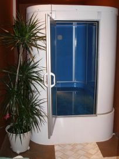
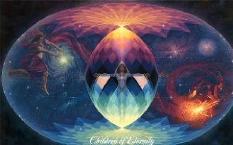

[Justin Bieber]What do you mean? OoohWhen you nod your head yes
Утро, словно миг откровенья,Краткий миг, дарящий зарю,Снова в это чудо-мгновенье,Снова я тебе повторю, повторю, повторю:Радоваться жизни самой,
Закрой глазаПредставь меняИди ко мнеЯ вся твоя…Закрой глазаПредставь меняИди ко мнеЯ вся твояМы улетаем навсегда

Рекламный стих для кабинета Флоатинга г. Вологда
Ты спишь, а на улице ветерТы спишь, а на улице дождьЗа наши дела только мы лишь в ответе,Надеюсь, ты это поймешь
Сплю теперь по ночам и уже не разбужен звонкамиИ уже не боюсь, потерять иль потерянным бытьМне тебя удалось отпустить, только мучает память
Ты дуновенье благодати,
Приносишь свет, как дар богов.
Блаженство мира в скромном взгляде,
Я воспевать его готов.
За голубой бездонной высью
За то, что рядом ты,Негромко, но сердечноСпасибо всем святым – Я их должник навечно.

Стихи плывут вдруг неоткуда,
De toi pour que l'aube m'éveille, Pour sortir lentement des rêves De toi pour trouver le sommeil Et reprendre le fil des rêves
Тебе, любимый, я любовь дарю,С годами лишь сильней люблю,И каждый день судьбу благодарю,За миг благоухания в раю.